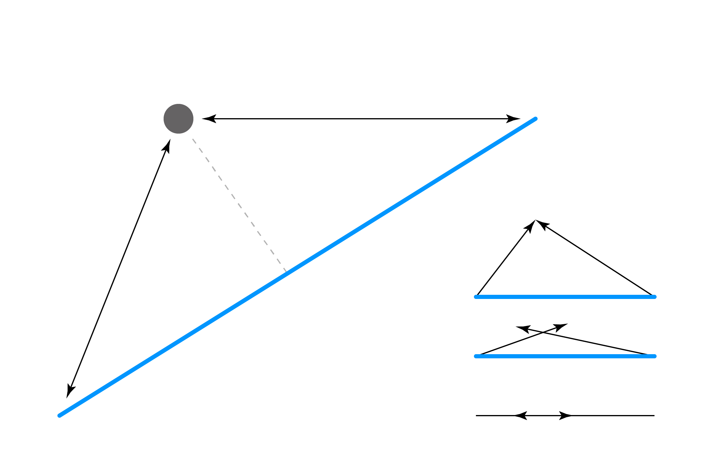

Досі наші фігури були або круглими, або вирівняними вздовж осей координат. А як перевірити зіткнення з похилою лінією (точніше, відрізком), яка може бути повернута під будь-яким кутом? На щастя, тут працює дуже красива й інтуїтивна геометрична ідея.
Лінія на полотні задається двома кінцевими точками з координатами (x1, y1) та (x2, y2). Ми можемо знайти її повну довжину за теоремою Піфагора. Оскільки в цьому алгоритмі нам доведеться обчислювати відстань тричі, скористаймося вбудованою функцією dist() із бібліотеки p5.js:
const lineLen = dist(x1, y1, x2, y2);Тепер виміряємо відстань від нашої тестової точки (px, py) до кожного з двох кінців лінії:
const d1 = dist(px, py, x1, y1);
const d2 = dist(px, py, x2, y2);Уявіть, що між двома цвяхами в точках (x1, y1) і (x2, y2) туго натягнуто нитку довжиною lineLen. Якщо ви торкнетеся нитки пальцем у будь-якому місці прямо на ній, вона розділиться на два шматочки d1 та d2, а їхня сума d1 + d2 точно дорівнюватиме довжині всієї нитки lineLen!

А що станеться, якщо точка лежить осторонь від лінії? Тоді відрізки d1 і d2 разом із самою лінією утворять трикутник. А за фундаментальним правилом геометрії (нерівністю трикутника) обхідний шлях через дві сторони трикутника завжди довший за пряму дорогу: сума d1 + d2 буде строго більшою за lineLen!
Здавалося б, достатньо перевірити умову d1 + d2 === lineLen. Але на практиці така сувора рівність майже ніколи не спрацює з двох причин:
Обидві проблеми легко вирішує невеликий допуск (буфер) — змінна buffer:
const buffer = 0.1; // що більше значення, то ширша чутлива зона навколо лініїТепер ми перевіряємо, чи сума d1 + d2 лежить у вузькому коридорі від lineLen - buffer до lineLen + buffer:
if (d1 + d2 >= lineLen - buffer && d1 + d2 <= lineLen + buffer) {
return true;
}
return false;Ось повний код прикладу:
// координати рухомої точки
let px = 0;
let py = 0;
// координати кінців лінії
let x1 = 100;
let y1 = 300;
let x2 = 500;
let y2 = 100;
function setup() {
createCanvas(window.innerWidth, window.innerHeight);
noCursor();
strokeWeight(15); // збільшена товщина для кращої видимості лінії та точки
x2 = width - 100;
y1 = height - 100;
}
function draw() {
background(255);
// оновлюємо координати точки положенням курсора
px = mouseX;
py = mouseY;
// перевіряємо зіткнення лінії та точки
const isColliding = collideLinePoint(x1, y1, x2, y2, px, py);
// змінюємо колір лінії при зіткненні
if (isColliding) {
stroke(255, 150, 0, 150);
} else {
stroke(0, 150, 255, 150);
}
// малюємо лінію
line(x1, y1, x2, y2);
// малюємо точку курсора
stroke(0, 150);
point(px, py);
}
// перевірка на зіткнення між лінією та точкою
function collideLinePoint(x1, y1, x2, y2, px, py) {
// відстані від точки до обох кінців лінії
const d1 = dist(px, py, x1, y1);
const d2 = dist(px, py, x2, y2);
// повна довжина лінії
const lineLen = dist(x1, y1, x2, y2);
// невеликий допуск (буфер) для компенсації похибки та зручності наведення
const buffer = 0.1;
// якщо сума двох відстаней майже дорівнює довжині лінії — точка на відрізку!
if (d1 + d2 >= lineLen - buffer && d1 + d2 <= lineLen + buffer) {
return true;
}
return false;
}Термінологічне зауваження: у суворій математиці пряма лінія нескінченна в обидва боки, а частина прямої, обмежена двома кінцевими точками, називається відрізком. Проте в комп’ютерній графіці (зокрема у функції line() у p5.js) відрізки традиційно називають просто лініями, тож ми використовуємо обидва слова як синоніми.
За ідею цього лаконічного алгоритму дякуємо користувачеві MrRoy на StackOverflow.
Далі: Лінія і Круг